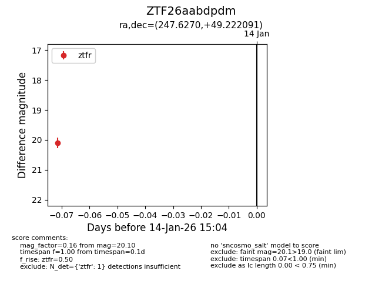
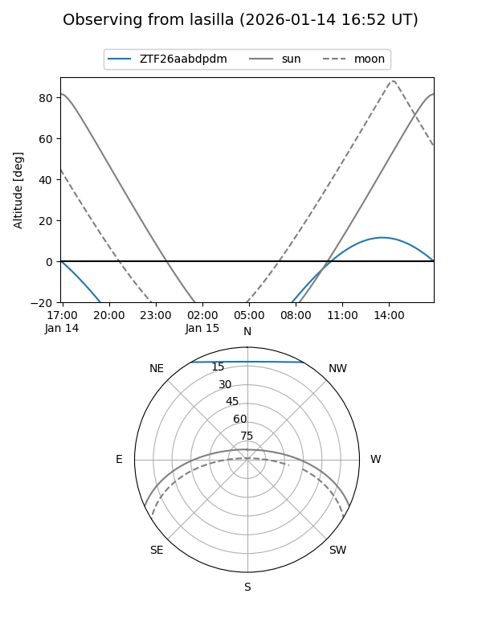

ZTF26aabdpdm
Target ZTF26aabdpdm at 2026-01-14 15:05
Aliases and brokers:
FINK: link
Lasair: link
ALeRCE: link
alt names
ZTF26aabdpdm (ztf,fink_ztf)
Coordinates:
equatorial (ra, dec) = 247.6270,+49.22209
equatorial (HMS+DMS) = 16:30:30.48,+49:13:19.53
galactic (l, b) = (76.1977,+42.89276)
Flags:
Photometry:
last ztfr=20.10
1 ztfr detections
Lightcurve

Visibility


Additional plots